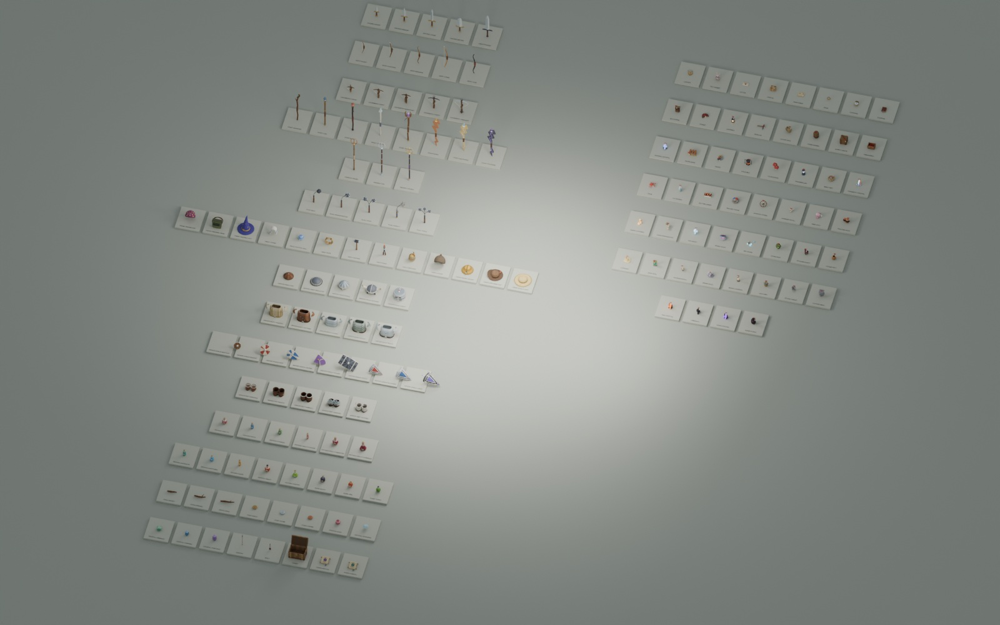

Programs break in surprising places
Programme gehen an überraschenden Stellen kaputt
You make the hero run a little slower. Easy! But then the legs move too fast for the speed, the footsteps don't match, and a monster that used to just miss you now catches you.
Du lässt den Helden ein bisschen langsamer rennen. Ganz leicht! Aber dann bewegen sich die Beine zu schnell für das Tempo, die Schritte passen nicht mehr, und ein Monster, das dich vorher knapp verfehlt hat, erwischt dich jetzt.
In a game, everything touches everything. One small change can show up somewhere far away. Game makers can't play the whole game after every change, so they have helpers:
In einem Spiel hängt alles mit allem zusammen. Eine kleine Änderung kann sich ganz woanders zeigen. Spielemacher können nicht nach jeder Änderung das ganze Spiel durchspielen, darum haben sie Helfer:
Tests
Tests
Little programs that check the rules, hundreds of times, in seconds.
Kleine Programme, die die Regeln prüfen, hundertfach, in Sekunden.
Seeds
Seeds
A bug that happened once can be made to happen again.
Ein Fehler, der einmal passiert ist, lässt sich wieder hervorholen.
Tools to look
Werkzeuge zum Hinschauen
Secret switches and pages that show what is normally hidden.
Geheime Schalter und Seiten, die zeigen, was sonst versteckt ist.
Save points
Speicherpunkte
Every working step is saved, so you can always go back.
Jeder funktionierende Schritt wird gespeichert, damit du immer zurück kannst.
Try it: break a test
Probier es: Mach einen Test kaputt
One of the game's tests checks how the glassmaker's old sword feels: a spider should take two slashes, a Stunder five. Here the test runs with the game's real combat code. Change the sword's damage and run the test again.
Einer der Tests des Spiels prüft, wie sich das alte Schwert des Glasmachers anfühlt: Eine Spinne soll zwei Hiebe brauchen, ein Stunder fünf. Hier läuft der Test mit dem echten Kampfcode des Spiels. Ändere den Schaden des Schwerts und lass den Test noch mal laufen.
Look at the strip: only a few numbers pass. The test doesn't care about the exact number, it cares about how the fight feels.
Schau dir den Streifen an: Nur wenige Zahlen bestehen. Dem Test ist die genaue Zahl egal, ihm ist wichtig, wie sich der Kampf anfühlt.
Tests: inspectors that never get tired
Tests: Prüfer, die nie müde werden
A test is a small program that uses the game's code and checks one thing. For example:
Ein Test ist ein kleines Programm, das den Code des Spiels benutzt und eine Sache prüft. Zum Beispiel:
test('running ramps up over RUN_RAMP, passing walking pace early, so taps stay precise', () => {
stand();
const walk = until(WALK_SPEED, 1, 0, true);
assert.ok(walk.t < RUN_RAMP * 0.75, 'walking pace after about 70% of the ramp: ' + walk.t);
stand();
const run = until(RUN_SPEED, 1, 0, true);
assert.ok(Math.abs(run.t - RUN_RAMP) <= DT, 'full run after RUN_RAMP: ' + run.t);
});Type npm test, and all of them run. Green: all good. Red: something you changed broke something, maybe something you didn't even think about.
Tipp npm test, und alle laufen. Grün: alles gut. Rot: Etwas, das du geändert hast, hat etwas kaputtgemacht, vielleicht etwas, an das du gar nicht gedacht hast.
Some tests build hundreds of worlds and walk through them: can every world be finished down to the core? Do houses in the town overlap?
Manche Tests bauen Hunderte Welten und laufen hindurch: Kann man jede Welt bis zum Kern schaffen? Überlappen sich Häuser in der Stadt?
A true story
Eine wahre Geschichte
The hero used to run at 4.1 cells per second. It felt too fast, so the run was slowed down to 2.8.
Der Held rannte früher mit 4,1 Zellen pro Sekunde. Das fühlte sich zu schnell an, also wurde das Rennen auf 2,8 verlangsamt.
And then a test failed! It checked that, when you start running, you reach walking speed after about half of the speed-up time. With the slower run, that now took 70%.
Und dann schlug ein Test fehl! Er prüfte, dass man beim Losrennen nach etwa der Hälfte der Anlaufzeit Gehtempo erreicht. Mit dem langsameren Rennen dauerte das jetzt 70%.
Was that bad? No, it was fine, so the test was updated to say 70%, and the notes in docs/combat.md too.
War das schlimm? Nein, es war in Ordnung, also wurde der Test auf 70% geändert, und die Notizen in docs/combat.md auch.
Lesson: a failing test is not always a bug. It's a question: "did you mean to change this?"
Lehre: Ein fehlschlagender Test ist nicht immer ein Fehler. Er ist eine Frage: "Wolltest du das ändern?"
Bugs you can replay
Fehler, die man wiederholen kann
The worst kind of bug is one you saw once and can never find again. In The Glass Bird that almost can't happen: every world comes from a seed. Open the same seed, and you get the same world, the same bridges, the same monsters in the same places.
Die schlimmste Art Fehler ist einer, den man einmal gesehen hat und nie wiederfindet. Im Glasvogel kann das fast nicht passieren: Jede Welt kommt aus einem Seed. Öffne denselben Seed, und du bekommst dieselbe Welt, dieselben Brücken, dieselben Monster an denselben Stellen.
The dev panel (?dev=1) shows the seed, the depth and the floor you're on, with a button to copy all of it.
Das Entwickler-Panel (?dev=1) zeigt den Seed, die Tiefe und das Stockwerk, auf dem du bist, mit einem Knopf, um alles zu kopieren.
A good bug report
Ein guter Fehlerbericht
Whoever fixes the bug wasn't there when it happened. Tell them three things, and where:
Wer den Fehler repariert, war nicht dabei, als er passiert ist. Sag drei Dinge, und wo:
- What you did: "I jumped from the bridge into the lava."
- Was du gemacht hast: "Ich bin von der Brücke in die Lava gesprungen."
- What happened: "I landed on it and walked away."
- Was passiert ist: "Ich bin darauf gelandet und weggelaufen."
- What you expected: "I should have burned."
- Was du erwartet hast: "Ich hätte verbrennen sollen."
- Where: "Seed 123, depth 4, next to the stairs." A screenshot helps a lot.
- Wo: "Seed 123, Tiefe 4, neben der Treppe." Ein Screenshot hilft sehr.
"Lava is broken" is not a bug report. It's a riddle.
"Lava ist kaputt" ist kein Fehlerbericht. Das ist ein Rätsel.
Tools to look inside
Werkzeuge, um hineinzuschauen
A lot of what the game does is invisible: routes, dice rolls, odds. So the makers built tools to make it visible. Try them:
Vieles, was das Spiel macht, ist unsichtbar: Routen, Würfelwürfe, Chancen. Darum haben die Macher Werkzeuge gebaut, die es sichtbar machen. Probier sie aus:
?dev=1: the dev panel. PgDn / PgUp jump a depth down or up, Alt+clicking a portal takes it at once, and ` opens the developer commands:/spawndrops any monster at any level next to you,/weaponhands you any weapon.?dev=1: das Entwickler-Panel. Bild↓ / Bild↑ springen eine Tiefe nach unten oder oben, Alt+Klick auf ein Portal nimmt es sofort, und ` öffnet die Entwickler-Befehle:/spawnlässt jedes Monster auf jedem Level neben dir erscheinen,/weapongibt dir jede Waffe.- P in the game: the route the cube factory planned, as a pink line.
- P im Spiel: die Route, die die Würfelfabrik geplant hat, als rosa Linie.
/testroom enemiesand/testroom guardians(with?dev=1): rooms with every monster kind lined up, standing still until you hit one./testroom enemiesund/testroom guardians(mit?dev=1): Räume, in denen alle Monstersorten in Reihen stehen, still, bis du eines triffst.- tools/player.html: a player for the game's songs, with every mood, and for all its sounds, each with its wave.
- tools/player.html: ein Player für die Lieder des Spiels, mit jeder Stimmung, und für alle seine Geräusche, jedes mit seiner Welle.
- In a terminal,
node tools/loot-table.mjsprints the odds of every sword, andnode tools/balance.mjsplays whole games in fast-forward and prints how strong you are at every depth. - Im Terminal druckt
node tools/loot-table.mjsdie Chancen für jedes Schwert, undnode tools/balance.mjsspielt ganze Spiele im Schnelldurchlauf und druckt, wie stark du in jeder Tiefe bist.

Save points: git
Speicherpunkte: git
Games have save points. Code has git. Every time something works, you save a commit: a snapshot of all files, with a message saying what changed.
Spiele haben Speicherpunkte. Code hat git. Jedes Mal, wenn etwas funktioniert, speicherst du einen Commit: einen Schnappschuss aller Dateien, mit einer Nachricht, was sich geändert hat.
If your next change goes wrong, you can always go back to the last commit. That makes it safe to try wild ideas!
Wenn deine nächste Änderung schiefgeht, kannst du immer zum letzten Commit zurück. Darum ist es sicher, wilde Ideen auszuprobieren!
git status | which files did I change? | welche Dateien habe ich geändert? |
git diff | what exactly did I change? | was genau habe ich geändert? |
git commit | save a snapshot, with a message | einen Schnappschuss speichern, mit einer Nachricht |
git restore | throw away changes, back to the last snapshot | Änderungen wegwerfen, zurück zum letzten Schnappschuss |
Some real commit messages from this game:
Ein paar echte Commit-Nachrichten aus diesem Spiel:
feat(loot): add generated weapon drops with rarity glows and floor panel
feat(player): get up from ragdolls with authored clips
fix(player): keep feet planted while getting up
feat(audio): give every theme its own song
fix(player): slow the run and match its cycle and footsteps
feat(dev): spawn any enemy kind from the dev panel"feat" means a new feature, "fix" a repair. The word in brackets is the part of the game. Short, clear, one thing each.
"feat" heißt neue Funktion, "fix" eine Reparatur. Das Wort in Klammern ist der Teil des Spiels. Kurz, klar, eine Sache pro Nachricht.
A real change, from idea to commit
Eine echte Änderung, von der Idee zum Commit
fix(player): slow the run and match its cycle and footsteps
docs/combat.md | 4 ++--
src/core/constants.js | 6 +++---
tests/movement.test.js | 2 +-
--- a/src/core/constants.js
+++ b/src/core/constants.js
-export const WALK_SPEED = 1.9, RUN_SPEED = 4.1, SWIM_SPEED = 0.9;
+export const WALK_SPEED = 1.9, RUN_SPEED = 2.8, SWIM_SPEED = 0.9;
-export const WALK_ANIM = 1.4, RUN_ANIM = 3.2;
+export const WALK_ANIM = 1.4, RUN_ANIM = 2.8; // the run: its authored stride, no stretch
--- a/tests/movement.test.js
+++ b/tests/movement.test.js
- assert.ok(walk.t < RUN_RAMP * 0.55, 'walking pace after about half the ramp: ' + walk.t);
+ assert.ok(walk.t < RUN_RAMP * 0.75, 'walking pace after about 70% of the ramp: ' + walk.t);This is how a change looks to git. Lines with - were removed, lines with + added.
So sieht eine Änderung für git aus. Zeilen mit - wurden entfernt, Zeilen mit + hinzugefügt.
The idea: "the run is too fast, and the legs don't match the speed". The change:
Die Idee: "Das Rennen ist zu schnell, und die Beine passen nicht zum Tempo." Die Änderung:
- the rule:
RUN_SPEEDfrom 4.1 to 2.8, - die Regel:
RUN_SPEEDvon 4,1 auf 2,8, - the look: the run animation now plays at the same pace (
RUN_ANIM), so the feet don't slide, - das Aussehen: Die Rennanimation spielt jetzt im selben Tempo (
RUN_ANIM), damit die Füße nicht rutschen, - the check: the test, updated on purpose,
- die Prüfung: der Test, absichtlich angepasst,
- the notes:
docs/combat.md. - die Notizen:
docs/combat.md.
Rule, look, check, notes. A good change usually touches all four.
Regel, Aussehen, Prüfung, Notizen. Eine gute Änderung berührt meistens alle vier.
Small steps
Kleine Schritte
Game makers work in a loop, a bit like the game loop:
Spielemacher arbeiten in einer Schleife, ein bisschen wie die Spielschleife:
- Idea: one thing at a time. "Spiders should notice me from further away."
- Idee: eine Sache auf einmal. "Spinnen sollen mich von weiter weg bemerken."
- Change the code.
- Ändern: den Code.
- Check: run the tests.
- Prüfen: die Tests laufen lassen.
- Play: does it feel right? Is it fun? No test can tell you that.
- Spielen: Fühlt es sich richtig an? Macht es Spaß? Das kann dir kein Test sagen.
- Save or undo: happy? Commit it. Not happy? Go back and try something else.
- Speichern oder zurück: Zufrieden? Commit. Nicht zufrieden? Zurück und etwas anderes probieren.
Small loops are better than big ones: if something breaks, you know which step broke it.
Kleine Schleifen sind besser als große: Wenn etwas kaputtgeht, weißt du, welcher Schritt es war.